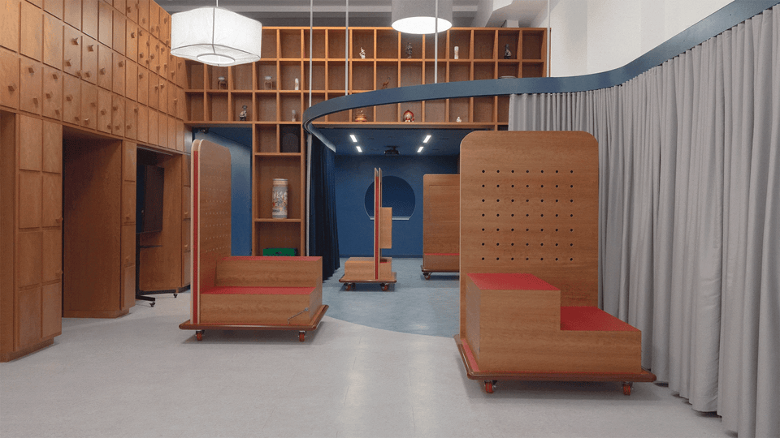
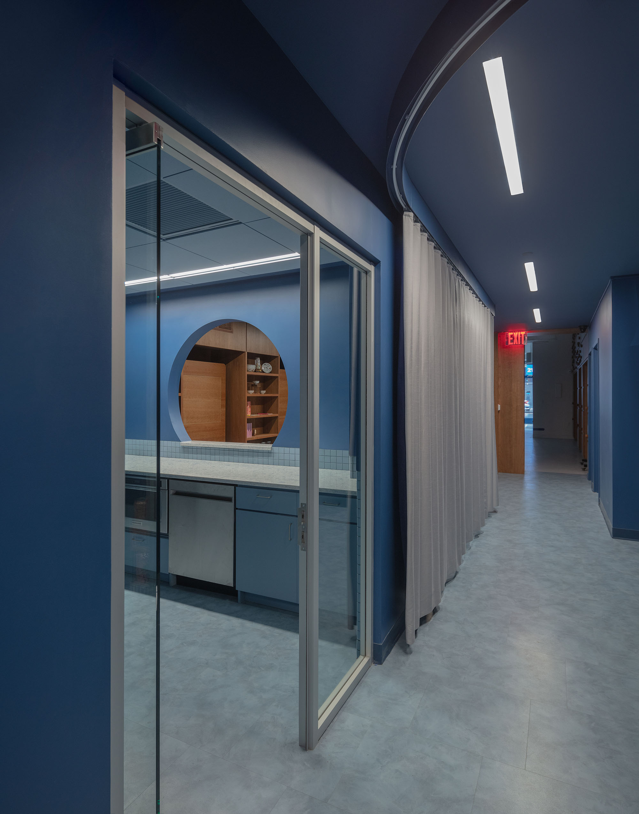
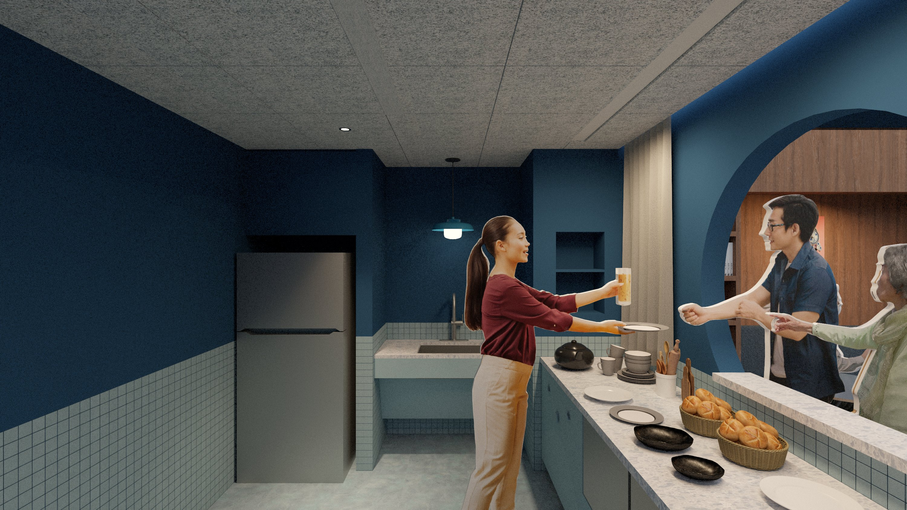
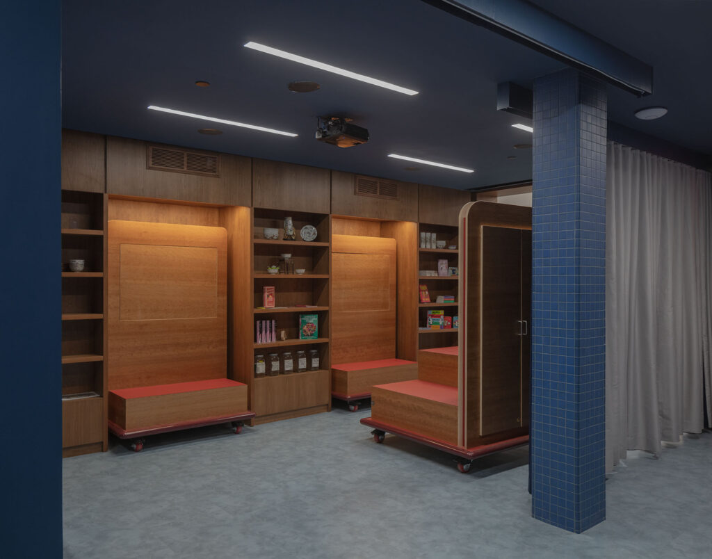
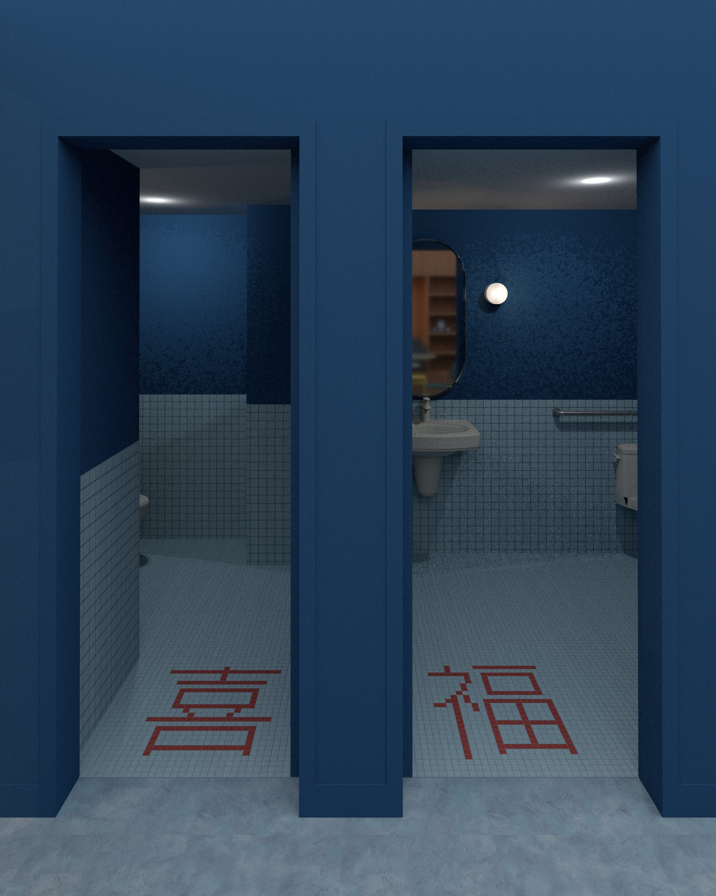

Small Business Innovation Hub
title
Small Business Innovation Hub
office
spaced agency
supervisor
Justin T.K. Ng
category
communities
+ Project Description
Role
In this project, my role was to design the cherry donor wall. The previous design for this wall was a permanent solution that required cnc engraving donor’s names into a large floor to ceiling shelving system. I was tasked with designing a flexible system that could accommodate three different tiers of donors. My proposal (which was eventually built) was a play off of Welcome to Chinatown’s coin logo, where donor coins could slide onto a series of diamond pegs.
Description from Spaced Agency
The Small Business Innovation Hub is a purpose-built community space for the non-profit, Welcome to Chinatown. The Hub integrates community events with business support services to empower local enterprises, foster connections, and champion Chinatown’s sustainable growth.
Reconfigurable from a business consulting office to a bustling night market, and from an art gallery to a movie screening, the interplay between these elements accommodate diverse opportunities for gatherings while honoring Chinatown’s rich heritage and entrepreneurial spirit.








